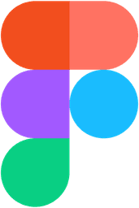
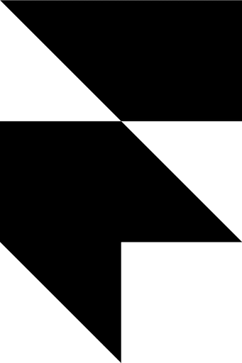
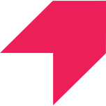
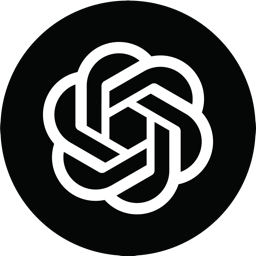

I design B2B products that are Complex yet intuitive.
Powerful yet simple.
15+ years making complicated software make sense.
What customers said
This approval flow finally gives us the audit trail we need for compliance, and our sales team can actually see where contracts get stuck.
Enterprise Customer Success Manager, on contract approval flowsThe new suggestion flow has changed how we work with external counsel. Instead of version chaos over email, we now have a single source of truth with tracked changes.
Customer in a support call, on real-time contract collaborationTools I work with
I also design in code: real components, real data, fewer surprises at handover.




